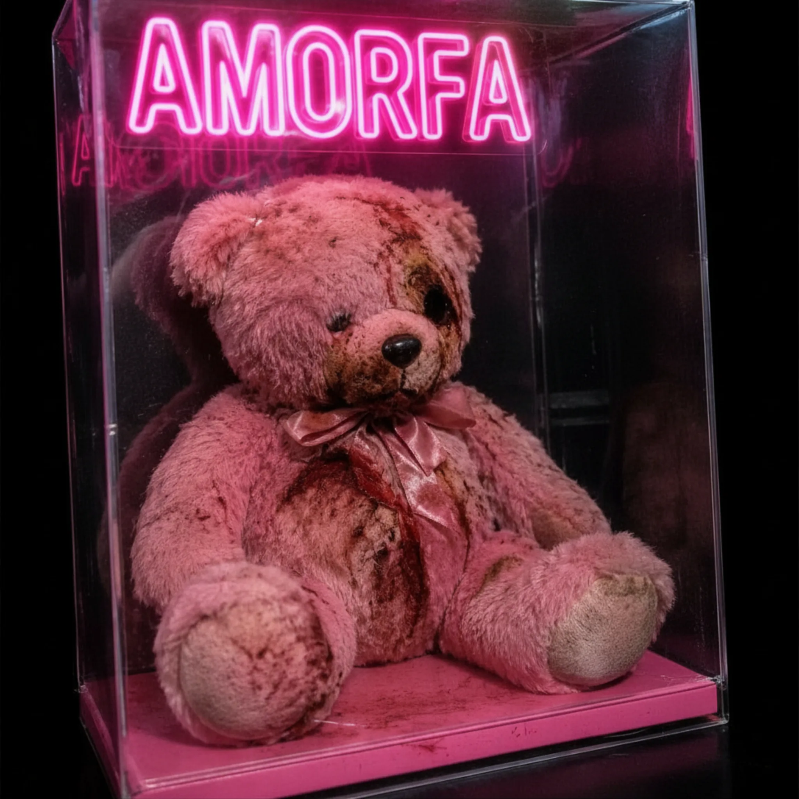

o projeto
Onde se Guarda o que Não Existe Mais.
Cinco discos. Uma anatomia da aparição.
Cada álbum abre uma falha diferente. No conjunto, eles formam AMORFA.

SUPERFÍCIE / Máscara de uso
→
II
Tudo Que Eu Uso Me Usa de Volta
A tela acende. O corpo responde. A superfície cobra.

CORPO / Queimadura fria
→
III
Pequenos Incêndios sob o Ar-Condicionado no Máximo
A pele registra. O quarto esfria. A marca fica quente.

AUSÊNCIA / Altar doméstico
→
IV
Teologia dos Fracassos Afetivos em Cama de Solteiro
A cama vira altar. O sinal vira rito. A ausência cria rotina.

FANTASMA / Forma sem forma
→
V
Fantasmogênese
O vidro respira. A forma falha. O arquivo ganha voz.

SUBMUNDO / Porta debaixo da casa
→
O Arranjo do Submundo
A casa abre por baixo. A fome mostra a planta. O mecanismo respira.
fora do projeto
EPs e lançamentos avulsos.
Trabalhos que existem fora da sequência principal de Onde se Guarda.

EP / Cor como veneno
→
Dia dos Namorados Macabro
Romance como produto com defeito. Neon rosa tóxico.
Outros lançamentos em breve.